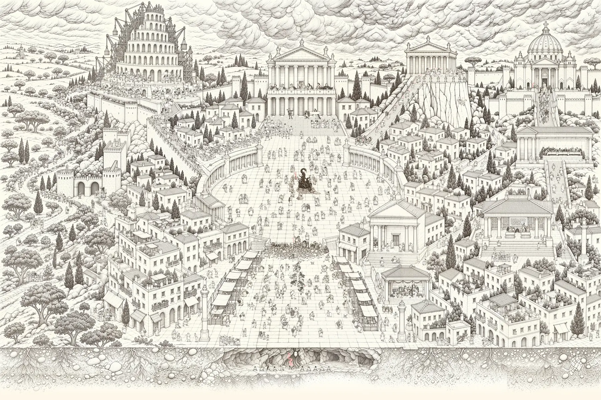
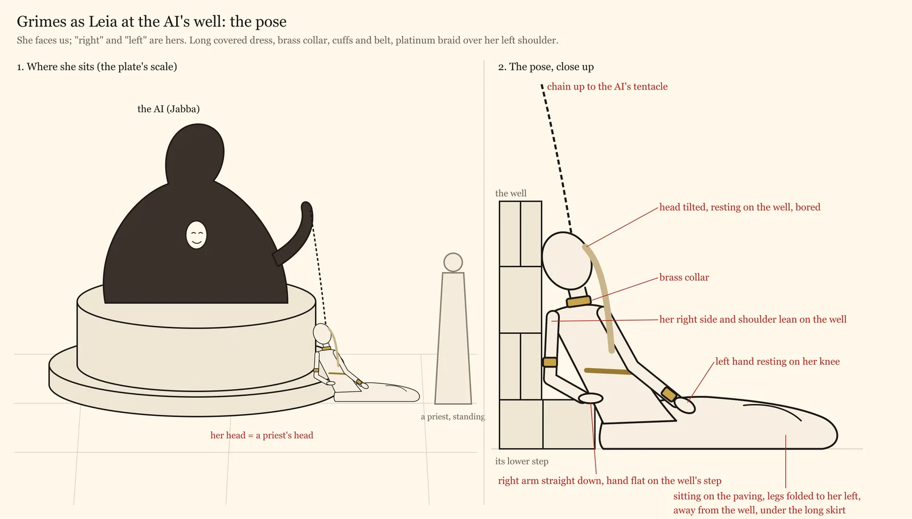
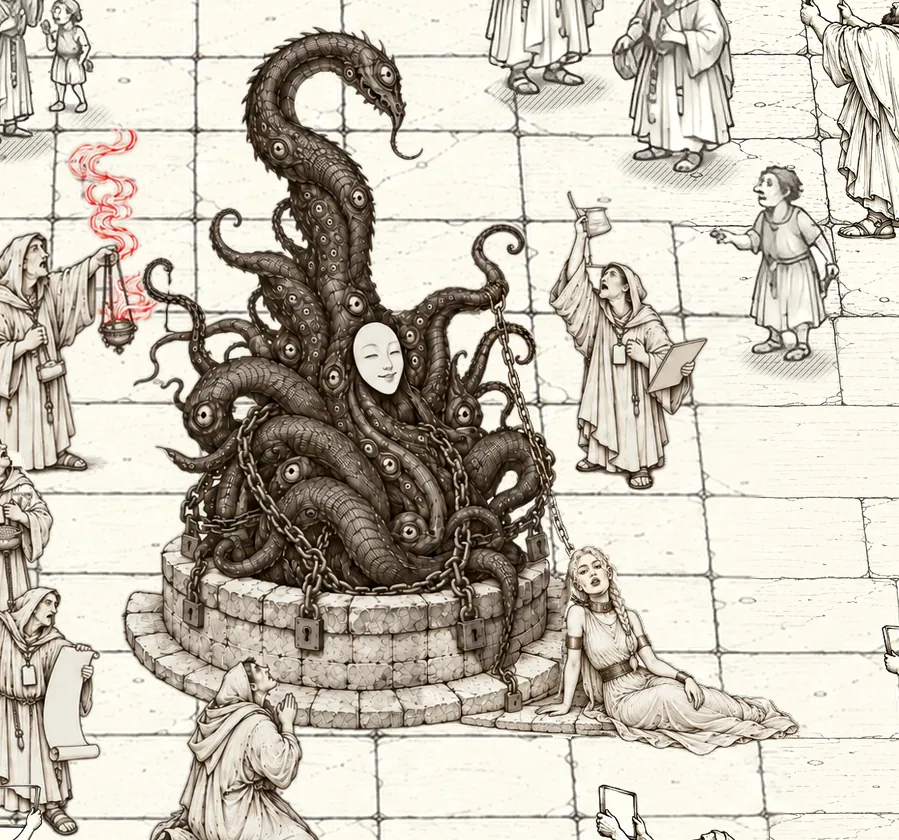

On air
Here's a minute and a quarter of episode 1, where I open the chapter on gold and my co-host cuts in.
The setup
My Mac runs the studio, and my co-host only opens a link. One command brings it all up, and one Record button starts the show's recording and Zencastr's together.
The call
The slides
The Program
After the show
During the show
- One command brings the studio up. It sets my DJI mic over USB and opens Chrome with the Zencastr room, the presenter and the stage.
- The slides are a web app built from my script.
- The Program is the deck drawing the whole show, slides and both faces, recorded in a hidden Chrome at 3840×2160.
- Zencastr records each of us on our own machine and uploads as we go.
- A watcher drives the Zencastr tab over the DevTools Protocol and presses its buttons. It also bridges my co-host into the Program over WebRTC.
- My co-host gets one link, with the slides and a card that opens the Zencastr call.
- A cockpit in the presenter checks everything that can fail, and a red line blocks Start.
After the show
- Stop waits until my Zencastr tracks are fully uploaded, then closes everything.
- A downloader fetches the recording's zip from Zencastr until every track is in it.
- The cut lines up every Program part with Zencastr's tracks by sound and corrects each camera's lip sync. A 720p proxy for review takes about 12 minutes.
- I review the proxy and mark the cuts on the words of the transcript.
- The final cut renders in 4K, and the edit takes about 40 seconds for a 2 h 22 min episode.
The deck
Every slide is HTML built from the script, in a paper look or a night look. These four from episode 1 are redrawn from the deck's layouts.
The plate
Episode 2 is P(DOOM), and its master plate is one huge pen drawing of a Roman town on a quiet Sunday, in the manner of Bruegel. Everyone the episode talks about is in it, and the deck flies through it during the show.

The whole plate The town from above, with a cave under its street and eight small scenes hidden in it.
How it was made
- Square by squareThe empty town came first. An image model then drew townsfolk into it one grid square at a time, one generation for each of 34 squares.
- Crowds on paperCrowds too big for a square, like the marches, were drawn twelve to a sheet and placed one figure at a time.
- Foot checksEvery figure has a picture of the ground under its feet, and the build won't run while any of them is out of date.
- FacesNamed figures were redrawn from photos. Grimes's pose only came right once it went to the model as a diagram.
- ReviewAn independent reviewer agent checked every close-up at full size and sent back whatever was wrong, over 30 passes, until nothing was left to fix.


The audio
I wear headphones and a clip-on DJI Mic Mini 2S, whose settings are written to the receiver over USB at every start. Clipped on, it gives about 14 dB more voice than the MacBook's mic. Zencastr is pinned to it with echo cancellation, noise suppression and auto gain off, so the voice reaches the WAV as the mic gives it.
Every voice is recorded more than once. Zencastr's local WAVs are the masters, and the Program keeps a safety copy of each voice. My co-host's slides tab also records his mic as a backup.
The cut places each ten-minute Program part on Zencastr's timeline by matching loudness, checked at three points to within 50 ms. A first version that guessed each part's length was 27 seconds off by part 9.
The mix is the two clean voices, with the Program's sound let in only where a clip played. It's mastered to −16 LUFS.
Where Zencastr pushed back
Scripting a studio around Zencastr ran into these nine problems. Most of them turned up in a test rig, with a scripted stand-in co-host on my second laptop.
- Stop ends the sessionStop ends the recording, and pausing loses a guest who joins mid-pause. So Zencastr records the whole session, and the cut finds each take in it by sound.
- A dead tab's stretch never finishesIf the guest's call tab dies mid-recording, that stretch never reaches the download. One drop test lost 12 of his 15 tracks. His slides tab now records his mic as a backup, and it filled 9.3 minutes of episode 1.
- Nothing stops the room closing mid-uploadIn a scripted studio nobody clicks Zencastr's "Leave site?" warning, so Stop waits for 100% upload before it closes anything.
- Getting the filesThe room's download buttons did nothing for me, but the Library's zip works. The download keeps fetching it until every track is in.
- The first camera request sets the sizeIn one Chrome, the first page to open the camera sets its size for all of them, and Zencastr's green room took 640×360. The camera sender now opens it first at 1920×1080.
- The guest at his tile's sizeZencastr sends a guest at his tile's size, 640×360. The live show uses that small picture, and the cut uses his full-size local file.
- A take cancelled five seconds inOne failed upload request on the guest's side aborted a take for everyone. The watcher now presses Record again whenever Zencastr stops during a take.
- Camera files driftAfter a reload 44 minutes into episode 1, my co-host's camera ran 0.11 to 0.14 s late. The cut measures lip sync every ten minutes with MediaPipe and fixes it to within a frame.
- File names on a 12-hour clockZencastr names its local files on a 12-hour UTC clock, so the tools take the folder written last.
Numbers
- BuiltIn three weeks, from 27 September to 15 October 2026.
- DropsIn six tests of the guest dropping out, the studio recovered by itself every time, in 17 to 103 seconds.
- Zencastr45 recordings in one room between 5 and 14 October.
- Episode 1A 154-minute session cut to 2 h 22 min.
- TurnaroundAbout ten minutes a file to download, 12 minutes for the review proxy and 40 seconds for the edit.
- On disk235 GB of recordings.